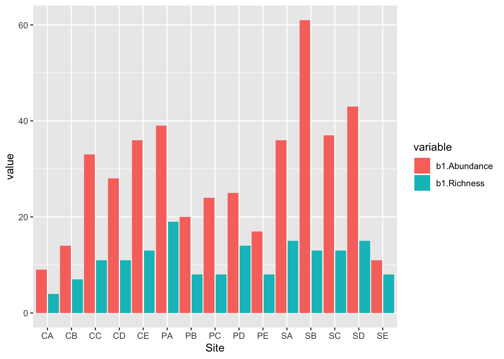
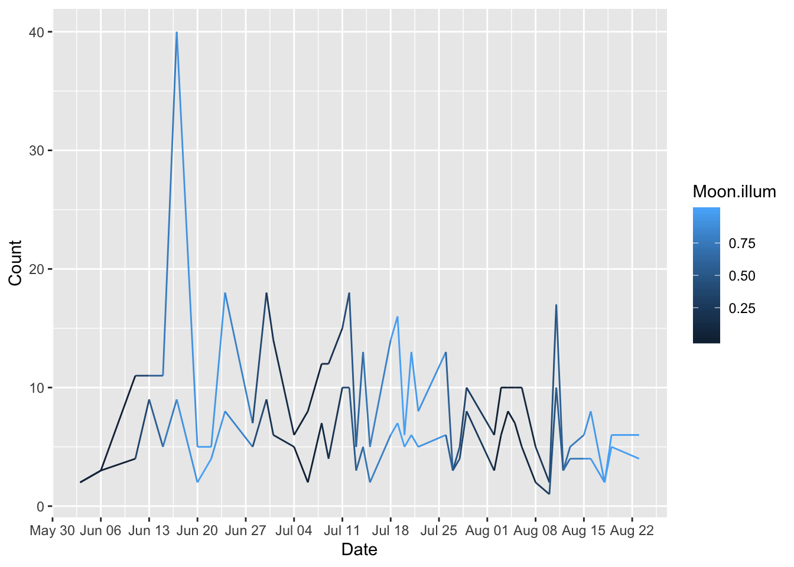
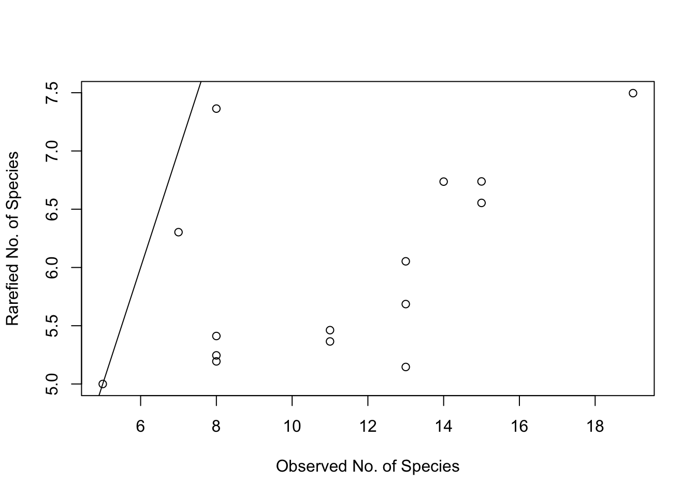
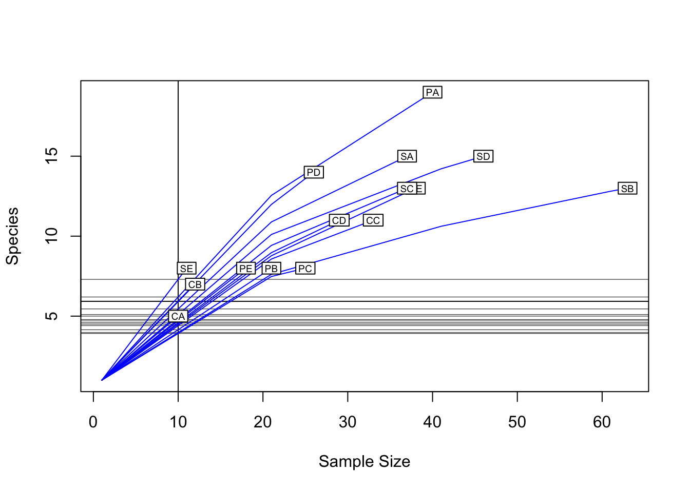

2 Descriptive Statistics
2.1 Species Breakdown
2.2 Captures by forest type

2.3 Captures and Species by site

2.4 Capture by time

2.5 Species Accumulation Curves
Species accumuluation curve. Notice that it does not plateau.


## Asym xmid slope
## 77.085263 10.379364 2.104346## [1] 11.50164 17.50102 21.91169 25.41697 28.32076 30.79167 32.93486
## [8] 34.82098 36.50003 38.00880 39.37519 40.62086 41.76300 42.81545
## [15] 43.78952
2.6 Rarefaction using Vegan

2.7 Deriving Simpson’s Diversity Index
## CA CB CC CD CE PA PB PC
## 1.418484 1.791759 1.810592 1.818166 2.031423 2.622996 1.727010 1.699258
## PD PE SA SB SC SD SE
## 2.212530 1.637727 2.329190 1.881611 2.118527 2.313582 1.8937882.8 Lets make a Whittaker plot
##
## Deviance for RAD models:
##
## CA CB CC CD CE PA PB
## Null 1.02151 1.99618 9.84140 9.33551 10.05057 7.62813 2.74450
## Preemption 0.61915 0.86423 9.29821 8.84050 7.85160 5.01911 1.94073
## Lognormal 0.58399 0.54817 5.67034 5.51876 7.82598 3.69578 2.23844
## Zipf 0.48624 0.22520 2.54721 2.03484 6.15877 1.52559 1.92643
## Mandelbrot 0.42518 0.22520 2.54721 2.03484 5.19435 1.36864 1.46242
## PC PD PE SA SB SC SD
## Null 2.27229 10.00193 4.56753 5.51726 14.46778 5.68408 4.25790
## Preemption 2.07543 9.38198 4.32004 4.70656 7.42691 4.37264 2.94046
## Lognormal 1.23514 6.37543 3.20893 2.67068 3.95722 3.55080 2.34855
## Zipf 0.29946 2.99586 1.27231 0.53937 1.77644 1.87374 1.73316
## Mandelbrot 0.29946 2.99586 1.27232 0.53937 1.29200 1.51869 0.93167
## SE
## Null 4.2249
## Preemption 2.5337
## Lognormal 1.8280
## Zipf 1.0940
## Mandelbrot 1.0940